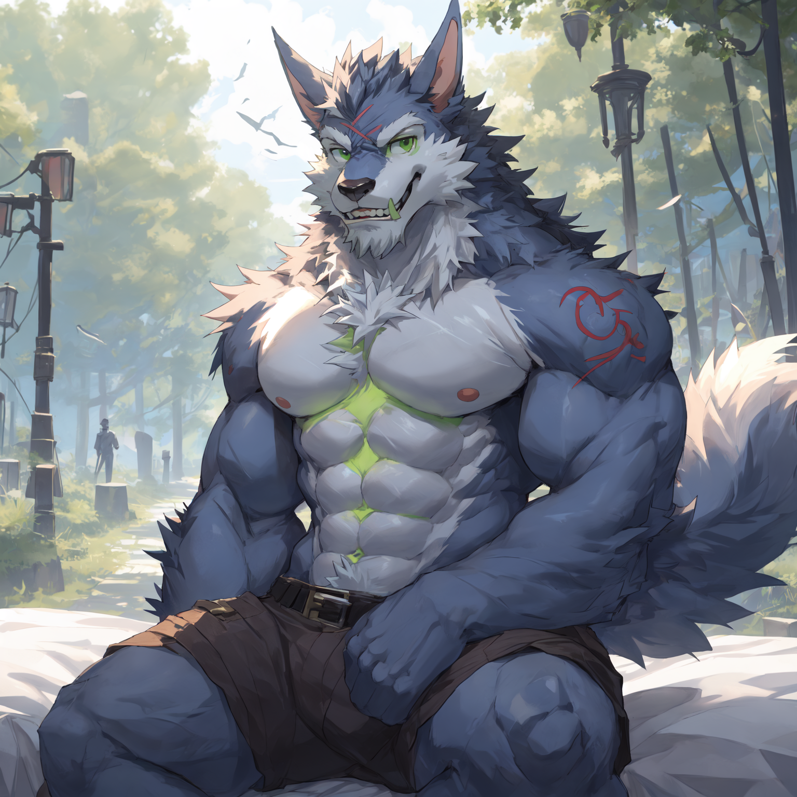

The furry fandom is a subculture interested in anthropomorphic animal characters. Some examples of anthropomorphic attributes include exhibiting human intelligence and facial expressions, speaking, walking on two legs, and wearing clothes. The term "furry fandom" is also used to refer to the community of people who gather on the Internet and at furry conventions.